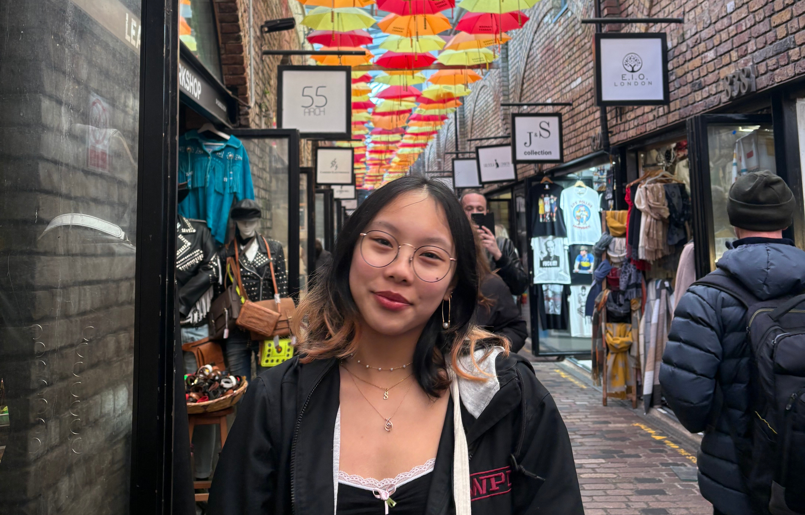

Hi! My name is Katherine Tse, but I also go by Kat. I am a rising Senior at Worcester Polytechnic Institute in the class of 2026.
BS Computer Science '26
BS Interactive Media and Game Development '26
Below is a bit more information about me!
On-Campus Activities
Below is a table with all the things that I do on campus. As you will soon see, I for some reason have gotten myself into many different things. I really wonder how I am still standing sometimes. But at the end of the day, I really do enjoy all that I get to do.
| Type | Name of Organization | Role |
|---|---|---|
| Job | WPI Biomanufacturing and Education Training Center | Office Assistant |
| Job | WPI Computer Science Department | Peer Learning Assistant |
| Club | Alpha Gamma Delta - Zeta Zeta | Chapter President |
| Club | WPI Ballroom Dance Team | Closet Coordinator |
| Club | WPI Order of Omega | Secretary |
| Club | VOX Musical Theater | Choreographer |
| Club | WPI Upsilon Pi Epsilon | Member |
| Club | WPI Omicron Delta Kappa | Member |
Hobbies
When I am not running around doing one of my many activities, I do have hobbies that I enjoy doing. These things are some of my favorite ways to de-stress and unwind. They really do keep me sane.
-
Crafting [Click to Expand]
- Knitting
- Crocheting
- Embroidery
- Painting
- And More
- Spending Time with Friends
- Dancing
- Reading
-
Video Games [Click to Expand]
- Cozy Games
- Puzzle Games
Experience
Course Experience
Previous WPI CS Courses
- CS 1101 - Introduction to Program Design
- CS 2011 - Introduction to Machine Organization and Assembly Language
- CS 2103 - Accelerated Object-Oriented Design Concepts
- CS 2223 - Algorithms
- CS 2303 - Systems Programming Concepts
- CS 3013 - Operating Systems
- CS 3041 - Human-Computer Interaction
- CS 3133 - Foundations of Computer Science
- CS 3516 - Computer Networks
- CS 3733 - Software Engineering
- CS 4801 - Introduction to Cryptography and Communication Security
Other Coding Heavy WPI Courses
- ECE 2029 - Introduction to Digital Circuit Design
- ECE 2049 - Embedded Computing in Engineering Design
- IMGD 3000 - Technical Game Development I
- IMGD 4000 - Technical Game Development II
Other Coding Experience
I do not have a lot of experience coding not outside the WPI courses I took. In high school, I took AP Computer Science A which was in Java, but that was the extent of my experience before college. I also have not done many personal projects outside of coursework, but there are a few projects I am hoping to start this summer.
Pics!
Here are a few pictures of me. Click the button below to cycle through the images.
